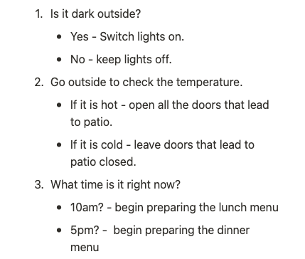
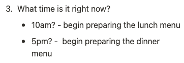

Javascript Fundamentals

MARCH 16, 2024
MARCH 16, 2024
Welcome to The Webpage Restaurant. Here at the Webpage Restaurant, we
have a restaurant building, the
design of the restaurant, and the
staff in the restaurant.
In the context of HTML, CSS, and Javascript, let me explain how these
three different languages relate to each other with the analogy of the
building, design, and the
staff of the restaurant:
DOM DOM DOOOOOOOOOOM *cymbals crashing wildly*
The Document Object Model (DOM) was something I just
couldn't get my head around at first. But fear not, if I can understand
it, you can too.
We can only get to understand the DOM once we really start learning
about Javascript.
Let's begin with an analogy: I like to think of the DOM as the “translator” between two people speaking two different foreign languages. It is a very smart translator because it can take what was said from another language and lay out all the information such as context, slang, tone, meaning of each word (even hidden information that was not explicitly said, but expressed in conveying that sentence) so that the other person can comprehend, process, and make use of the information in their own language. It's like the "bridge" between two languages.
The DOM is an Application Programming Interface (API), not a coding language. API means that it is a way for a coding language to “talk” to another coding language. Because HTML is a different language to Javascript, they need an API so that they can “talk” to each other. That is when the DOM comes in to play.
The DOM allows for Javascript to access, add, remove, make changes to HTML and CSS.
How exactly does the DOM do this?
It takes the entire HTML document, translates all the content (even all
the hidden information such as spaces and new lines), and
represents it into standardised objects. It must be
standardised so that any scripting language, such as Javascript, can
access and modify the HTML.
The DOM is not a copy of the HTML file, it’s just a different way to
organise the HTML information. For example, you are looking at this web
page, my blog entry, in your browser. What you are currently seeing is a
visual representation of the underlying HTML - it’s a way for YOU to
comprehend the HTML document. The DOM, on the other hand, represents the
HTML document differently as objects so that scripting languages can
comprehend (and modify) it.
The key word here is representation.
The DOM is constructed as a tree of objects with hierarchy. Every object
is under another object, and any object can have multiple children but
only one parent. If you remove an object from the DOM, all of it’s
children will also be removed - because each object “possesses” it’s
children.
Control Flow & Loops
Computers can run instructions, but they cannot make decisions on their own. That’s when we, the programmers, come in! We give computers instructions AND give them conditions to use for each set of instruction.
Control Flow:
In Javascript it is the order in which the computer runs the full script of code. Javascript executes code sequentially meaning it will begin from the first line of code and ends at the last line of code, unless the computer hits any statement that changes the course of the control flow (which happens very frequently).
The constructs or statements that change the flow of control are:
Analogy example of Control Flow:
Let’s go back to our example of the restaurant and we are the first person on shift to open and prepare The Webpage Restaurant. A bit of context to the restaurant - it’s opening hours are:
We are given a set of instructions to follow before we can open the restaurant for customers to come in:
It’s a simple analogy, but the Control Flow is going from instruction number one, two, then three. Notice how for each set of instructions there are constructs that give them an evaluation of conditions, and for each condition there is an instruction. The person reads the first set of instructions at the counter, then walk over to the light switch and based on the condition will execute the instruction or not, and walk back to the instructions at the counter and then follows the next set of instructions, and so forth.
Just like our analogy, the control flow in Javascript reads and executes code from top to bottom, reading each line of code from the first to the end, but for each line of code there can be conditionals or loops that can change it’s course.
Understanding Control Flow is important for writing efficient Javascript coding. For example, with our analogy above, if the ‘light switch’ instruction was after the ‘patio doors’ instruction and it was a Thursday (serving dinner only in the evening), then it wouldn’t be efficient instructions trying to walk to the doors in a dim lit room first thing - with our hands stretched out trying to make sure we don’t bump into things, and our eyes trying to make sense of what is around us. We would be faster to have the lights on to fully see what is in our way to the doors, and hence it is better to have these instructions first. Just like with programming, we must think of the best way to organise our Javascript code so that it is efficient and readable.
What are loops?
In Javascript, loops are a block of code that is executed and repeated
again and again, based on the conditions. It will continue to loop
through the block of code until the condition returns
false or if there is nothing left to loop over.
Let’s go back to our Webpage Restaurant analogy to explain this in an “every day” setting:
It is a Friday, and we are put on the shift to be the first person to open the restaurant and prepare before any customers can come through the door. We go through the opening instructions, and end up at instruction three:
Let's say it is 10AM and hence we begin preparing the lunch menu booklets. Our task now is to take the stack of menu booklets, starting from the first booklet, we open each one and replace the dinner menu with the lunch menu, then we close it, put it down, then we open the second menu and repeat this again and again until we reach the end of the stack of menus (when there is nothing to loop over). This is what looping is in Javascript, a task that is repeated, or in programming language, they say it is a task that can be iterated.
The traditional for loop looks something like this:
let i = 0 as saying “let’s begin our count at zero”.
true. When it is false,
the loop is terminated. In our example,
i < menus.length , I like to think of it as saying “let
us loop through each menu till we reach the end of the stack of
menus”.
i++ is saying
“after executing the condition, open the next menu in the stack”.
Another way I like to think of it is telling us “what do I do next
after each executed loop?”, we then answer by telling the loop to
i++ -
to go to the next loop and do the task again.
Other loops could be: for…in , for…of ,
ForEach().
Arrays and Objects are ways in Javascript to collect and store data. Both are similar in that they are mutable variables meaning they are able to change in value.
Arrays stores a list of data known as elements. Arrays use zero-based indexing meaning the first item is given an index of 0, then the second item one, and so forth.
Objects store collections of data known as properties - which consist of keys and values.
Let’s show Arrays and Objects as examples:
Arrays in our Webpage Restaurant could be our grocery list, and in code
this will look like:
let groceryList = ['onion', 'flour', 'tomato', 'wine'];
Objects in our Webpage Restaurant could store the collection of staff
profiles. Por ejemplo:
let staff = {
name: 'Mary',
age: 51,
canCook: true;
};
In the above example:
staffname, age, canCook
'Mary, 51, true
There are differences in how we can access data from arrays and objects:
ARRAYS
For arrays we can access elements using
square brackets [ ]. For example to retrieve the item number 3 from our grocery list, the
line of code would look like:
groceryList[3]; // returns 'wine'
Remember that
zero-based indexing is used for arrays, hence the returned element is
‘wine’, not 'tomato'.
Arrays can also have elements added and removed from the beginning or
end of the array using push() to add items at the end of an
array, pop() to remove the last item from the array,
unshift() to add items to the beginning of an array, and
shift() to remove the first item from an array.
Arrays can also be iterated through using the for loop,
for...in , for...of, and
ForEach() .
OBJECTS
Accessing data from objects, we use either the dot
. notation OR the
square bracket [ ] notation.
▸ Example One - get the value of a key from an object using both dot
notation or square brackets:
//dot notation:
staff.age // returns 51
//square bracket notation:
staff['age'] // returns 51
▸ Example Two - change the value of a key from an object using dot
notation only:
staff.name = Augustine
▸ Example Three - add a new property to the object using dot notation
only:
staff.medicalConditions = ['allergic to peanuts', 'sleep apnea',
'diabetes'];
▸ Example Four: to delete a property from an object using the
delete operator:
delete staff.canCook
Objects can also be iterated through however using only the
for...in, for...of, and
ForEach loop. If we wanted to use the for loop
for objects, we first would need to create a variable that is defined to
go through the object and grabs the keys and values.
For example, we would first create a variable that goes through our
object :
let staffNames = Object.keys(staff)
Notice how the ‘Object’ began with a capital ‘O'. Now we can create a
traditional for loop statement for the object .
functions? Why Are They Helpful?
Functions are code in Javascript that is written to perform a specific
task. Functions always have an input and a return output. They are
helpful because they can be reused, meaning they can be called anywhere
in our program which allows you to not write the same code again and
again. You can use the function just by a single short command, rather
than typing whole block of code again.
Functions must first be defined. The simple way they are defined is
using this basic syntax:
function functionName(parameter) {
//statements
}
Just because we defined a function doesn’t mean it will be called!
Remember to call the function in your script of code. The simple way to
do this is by writing the name of the function with () .
For example:
functionName()